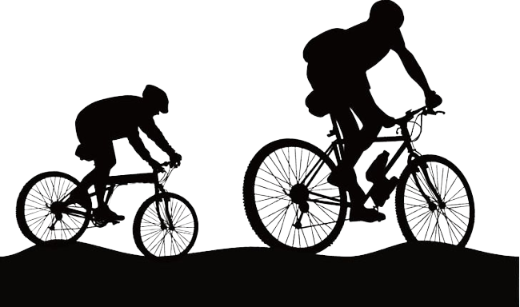

"Criar uma solução digital para o cliente do produto bike realizar a vistoria online, no momento da contratação, sem a necessidade de intervenção humana no processo."
Nos últimos anos, a popularidade do ciclismo como meio de transporte tem aumentado significativamente em muitas cidades ao redor do mundo. No entanto, apesar de ser um meio de transporte ecologicamente correto e saudável, a possibilidade de roubo ou danos em bicicletas é uma preocupação constante para os ciclistas. Nesse sentido, a Porto Seguro têm oferecido serviços de cobertura para bicicletas, mas para que um seguro possa ser contratado, é necessário realizar uma vistoria para verificar as condições da bicicleta.
Atualmente, a realização de vistorias ocorre apenas para bikes de alto valor e há a necessidade de um profissional que avalie a aprovação do cliente para o serviço. Inspeções manuais podem ser demoradas, sujeitas a erros humanos e, consequentemente, geram custos elevados para a empresa. Tendo o objetivo de expandir o produto seguro bike para o canal digital, a Porto Seguro propôs o desafio de desenvolver um sistema que faça a inspeção de maneira automatizada, permitindo a contratação direta do seguro sem a presença de corretores e vistoriadores, deste modo, se tornará viavel a inspeção das bicicleta de todos os clientes, independente de seu valor.
Além de minimizar fraudes e manter a sinistralidade controlada no canal digital, é importante que o sistema proposto seja simples e intuitivo para o cliente utilizar e não seja um ponto de grande abandono da jornada.
